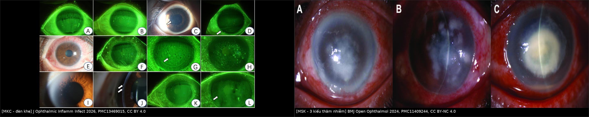
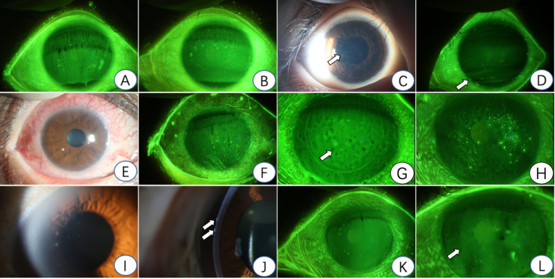
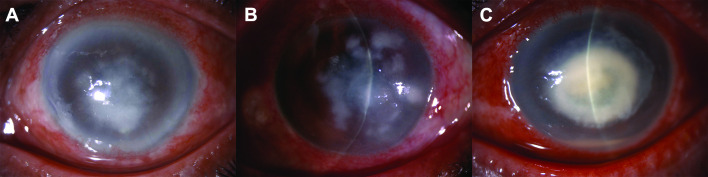
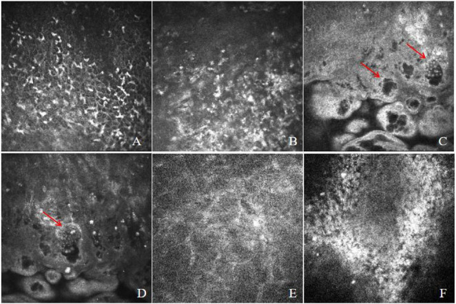
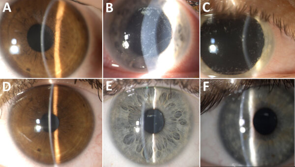

3202 — Viêm giác mạc do microsporidia: chấm dưới biểu mô dai dẳng, cấy âm & hai thể MKC – MSK / Microsporidial keratitis
Tags: pattern:loet-giac-mac pattern:tham-nhiem-giac-mac pattern:cham-bieu-mo pattern:viem-ket-mac vung:giac-mac protocol:den-khe protocol:IVCM protocol:AS-OCT anatomy:bieu-mo-giac-mac
Mức chắc chắn (certainty): tổng hợp y văn (literature synthesis) — ghép 26 ca viêm giác mạc do microsporidia (Thái Lan, PMC13139553), 21 ca thể nhu mô (Thái Lan, PMC11409244), 20 ca thể kết–giác mạc ở Trung Quốc (PMC13469015), ổ dịch Vittaforma corneae ven Biển Galilee 2022–2024 (PMC12309766), 16/332 ca di chứng (PMC8302272), tổng quan PMC7196102, cùng 2 ca nguyên văn có ảnh (PMC12852027, PMC11409244). Không có thử nghiệm ngẫu nhiên nào — mọi phác đồ dưới đây là chuỗi ca + đồng thuận, ghi rõ chỗ suy luận.
Câu chốt: microsporidia là ký sinh nội bào bắt buộc, nên cấy thường âm và bệnh nhân bị chẩn đoán sai trung vị 1 tháng (100% ca Trung Quốc, PMC13469015); ở thể nhu mô, 33,3% bị chẩn đoán nhầm là viêm giác mạc do herpes và bệnh diễn tiến trung vị 9 tháng trước khi được chẩn đoán (PMC11409244). Hai thể khác nhau về bản chất: MKC (kết–giác mạc, nông, tự giới hạn, đáp ứng thuốc nhỏ) và MSK (nhu mô, phải ghép giác mạc: 18/21 ca ghép xuyên, lành 76,2% sau mổ 1 và 95,2% sau mổ 2). Chẩn đoán nằm ở soi đèn khe có kinh nghiệm + nhuộm đặc biệt + IVCM/PCR, không ở cấy.
Phân vai với bài khác: 1460 (nấm), 1472 (Acanthamoeba), 6132 (vi khuẩn), 3200 (Pythium), 3201 (sẹo – chọn kiểu ghép). Bài này phủ tác nhân nội bào — nhóm cấy âm, nhuộm dương, diễn tiến chậm.
1. Tổng quan bệnh học – cơ chế hình ảnh (TẠI SAO cấy âm mà nhuộm lại thấy)
1.1 Tác nhân — "nấm nhưng không phải nấm"
- Microsporidia là sinh vật nhân chuẩn, nội bào bắt buộc, tạo bào tử, có bộ gen thoái hóa, quan hệ gần với nấm hơn là động vật nguyên sinh; > 1.300 loài / ~200 chi đã mô tả (PMC7196102). Ở giác mạc hay gặp: Encephalitozoon hellem*, E. bieneusi, Vittaforma corneae, Encephalitozoon cuniculi, Nosema, *Trachipleistophora.
- Kích thước quyết định cách nhìn: bào tử ~1–4 µm (meront 2,5 × 1,5 µm), tức nhỏ hơn sợi nấm 3–10 µm và nhỏ hơn tế bào vi khuẩn chỉ vài lần → trên đèn khe chỉ thấy "chấm", không thấy "sợi"; phải nhuộm hoặc phóng đại cao (IVCM) mới thấy cấu trúc.
- Cơ chế nhiễm: bào tử bắn ống cực (polar tubule) xuyên màng tế bào chủ và tiêm nguyên sinh chất vào trong; sau đó nhân lên trong bào tương, phá vỡ tế bào và lan sang tế bào bên cạnh. Vì vậy tổn thương là đốm rời rạc, đa ổ, cùng lứa tuổi — không phải ổ loét lan từ một điểm như vi khuẩn.
1.2 TẠI SAO mỗi đặc điểm lại như vậy
| Đặc điểm | Giải thích cơ chế |
|---|---|
| Cấy thường âm | Ký sinh nội bào bắt buộc, không mọc trên thạch máu/thạch Sabouraud thường quy; muốn nuôi phải nuôi cấy tế bào |
| Nhuộm Gram dương, Ziehl–Neelsen dương | Thành bào tử chứa chitin + protein giàu arginine → bắt màu gram dương và kháng cồn-acid — đây là lý do ZN dương 89,5% (17/19) trên mô bệnh học (PMC11409244) |
| Calcofluor White phát huỳnh quang | Calcofluor gắn chitin → bào tử sáng xanh trên nền tối; nhuộm nhanh, nhạy, nhưng không đặc hiệu loài |
| Modified trichrome bắt màu hồng/đỏ | Trichrome nhuộm thành bào tử nổi trên nền xanh → 11/14 ca (78,6%) phát hiện được trên scraping (PMC11409244) |
| IVCM: đốm phản xạ mạnh dạng vỏ kép | Bào tử có vỏ kép dày → phản xạ mạnh; thấy cấu trúc dạng nang vỏ sáng dọc lá nhu mô (PMC12852027) |
| Không có mạch máu mới ở thể nhu mô | Sinh vật khu trú trong keratocyte, không kích thích tân mạch như viêm nhu mô do herpes tái phát |
1.3 Ngưỡng và con số phải nhớ
| Mốc | Số liệu | Nguồn |
|---|---|---|
| Tỷ lệ trong viêm giác mạc nhiễm khuẩn | ~0,4% ở một số quần thể | PMC7196102 |
| Thời gian bị chẩn đoán sai (MKC, Trung Quốc) | trung vị 1 tháng, 100% ca | PMC13469015 |
| Thời gian diễn tiến (MSK, Thái Lan) | trung vị 9 tháng (IQR 2,2–12,0) | PMC11409244 |
| Tuổi trung bình MSK | 63,8 ± 12,2 | PMC11409244 |
| Tuổi trung bình MKC | 28,5 (Trung Quốc) · 39 (Thái Lan) | PMC13469015 · PMC13139553 |
| Tiền sử corticoid nhỏ trước đó | 53% | PMC13139553 |
| Tiền sử mật ong không vô khuẩn | 23% | PMC13139553 |
| Yếu tố nguy cơ MKC | tiếp xúc chim 70% · kính tiếp xúc 40% · nước 15% | PMC13469015 |
| Tác nhân MKC (Trung Quốc) | E. hellem 65% · E. bieneusi 15% · V. corneae 15% | PMC13469015 |
| Nhuộm modified trichrome (scraping) | 78,6% (11/14) | PMC11409244 |
| Nhuộm Ziehl–Neelsen (mô bệnh học) | 89,5% (17/19) | PMC11409244 |
| Kết cục MSK sau mổ | 76,2% lành sau mổ 1 · 95,2% sau mổ 2 | PMC11409244 |
| Di chứng MKC | 16/332 (4,8%) quay lại; 8 mắt tái phát sau 60,4 ± 40,6 ngày | PMC8302272 |
2. Mẫu hình + chẩn đoán phân biệt theo vị trí (gamut)
2.1 Hai thể bệnh — khác nhau về tầng tổn thương, không chỉ về mức độ
| MKC — viêm kết–giác mạc | MSK — viêm giác mạc nhu mô | |
|---|---|---|
| Tầng | Biểu mô / dưới biểu mô | Nhu mô trước–giữa |
| Hình thái | Chấm rải rác đa ổ, trợt biểu mô, nhuộm fluorescein dương ở rìa (limbus) | Nhiều ổ xám-trắng, bờ mềm ("fluffy"), có thể lan toàn bộ nhu mô |
| Diễn tiến | Ngày–tuần, tự giới hạn | Tháng (trung vị 9), tiến triển âm thầm |
| Điều trị | Thuốc nhỏ (fumagillin, PHMB, chlorhexidine, albendazole) | Phải ghép giác mạc (TPK/DALK) |
| Tiên lượng | Tốt | Dè dặt, nguy cơ thủng |
- Ba kiểu thâm nhiễm của MSK (PMC11409244, Hình 1): (A) ổ xám-trắng trung tâm nhạt, bờ mềm kèm nhiều ổ cạnh trung tâm; (B) nhiều ổ quanh trung tâm rời rạc; (C) đậm đặc, dày toàn bộ, có thể kèm mủ tiền phòng. Kiểu càng đậm → tiên lượng thị lực càng xấu.
- Dấu hiệu rìa rất hữu ích: nhuộm fluorescein dương ở biểu mô rìa gặp ở 65% ca MKC Trung Quốc (PMC13469015) — dấu này hiếm gặp trong viêm giác mạc do vi khuẩn/nấm thông thường.

Trái: MKC — tổn thương biểu mô nông, rải rác, bờ mờ, nhuộm fluorescein dương (mũi tên). Phải: MSK — ba kiểu thâm nhiễm nhu mô xám-trắng, bờ mềm. Nguồn: J Ophthalmic Inflamm Infect 2026, PMC13469015, CC BY 4.0 và BMJ Open Ophthalmol 2024, PMC11409244, CC BY-NC 4.0. Ảnh ghép letterbox, giữ nguyên tỷ lệ.2.2 Gamut theo hình thái
- Chấm/trợt biểu mô đa ổ → MKC (microsporidia), viêm kết–giác mạc do adenovirus, viêm giác mạc chấm nông (SPK) do khô mắt/độc tố dung dịch kính, herpes biểu mô không điển hình.
- Thâm nhiễm nhu mô nhiều ổ bờ mềm → MSK, viêm nhu mô do herpes, nấm, Acanthamoeba, Pythium.
- Ổ loét đơn độc có mủ → vi khuẩn (Pseudomonas, phế cầu), nấm.
- Viêm cùng mạc/củng mạc kèm thâm nhiễm → microsporidia thể lan (hiếm), Pythium, nấm.
- Viêm nội nhãn → microsporidia ở người suy giảm miễn dịch (rất hiếm).
3. Bảng so sánh phân biệt (ma trận đối chiếu)
| Thực thể (entity) | Hình ảnh điển hình | Chốt vào (rule-in) | Chốt loại (rule-out) | Gợi ý xác nhận |
|---|---|---|---|---|
| Microsporidia (MKC) | Chấm đa ổ biểu mô/dưới biểu mô, rìa nhuộm fluorescein dương, kết mạc viêm nhẹ | Chấm đa ổ + tiền sử nước/đất/chim/kính tiếp xúc + cấy âm + nhuộm thấy bào tử | Có sợi nấm hoặc dendrite điển hình → tác nhân khác | Scraping: Gram, modified trichrome, ZN, calcofluor; PCR/mNGS |
| Microsporidia (MSK) | Nhiều ổ xám-trắng nhu mô, bờ mềm, không tân mạch, diễn tiến nhiều tháng | Thâm nhiễm nhu mô dai dẳng + không đáp ứng kháng sinh/kháng virus + IVCM thấy vỏ kép phản xạ mạnh | Đáp ứng nhanh với acyclovir → herpes; có sợi nấm → nấm | IVCM, sinh thiết giác mạc, mô bệnh học + ZN |
| Herpes giác mạc | Dendrite đầu tận có chấm, giảm cảm giác giác mạc; thể nhu mô có tân mạch + phù | Dendrite + giảm cảm giác + PCR HSV dương + đáp ứng acyclovir | Không dendrite, không đáp ứng acyclovir sau 2 tuần → nghĩ microsporidia | PCR HSV, test cảm giác, theo dõi 2 tuần |
| Acanthamoeba (bài 1472) | Vòng thâm nhiễm, viêm thần kinh tỏa tia (radial keratoneuritis), đau không tương xứng | Đau dữ dội + vòng + tiền sử kính tiếp xúc nước | Không đau nhiều, không vòng → ít nghĩ | IVCM tìm nang, cấy trên thạch E. coli |
| Nấm (bài 1460) | Bờ có tua (feathery), tổn thương vệ tinh, mủ tiền phòng, tiền sử chấn thương thực vật | Bờ tua + vệ tinh + soi tươi/KOH thấy sợi | Bờ mềm đều, không vệ tinh → nghĩ microsporidia | KOH, cấy Sabouraud, IVCM |
| Vi khuẩn (bài 6132) | Ổ loét đơn độc, mủ đặc, khởi phát < 48 giờ | Mủ + hypopyon + Gram thấy vi khuẩn | Diễn tiến nhiều tuần, không mủ đặc → không điển hình vi khuẩn | Gram, cấy, kháng sinh đồ |
| Pythium (bài 3200) | Tua/chấm/lưới/rãnh ngoại vi, tiến triển bùng nổ | Score 5 dấu + tiền sử nước/nông nghiệp | Bờ mềm nhiều ổ, chậm → microsporidia | Nuôi cấy, PCR, phản ứng kháng nấm kém |
| SPK do khô mắt/độc tố | Chấm nông hai bên, đối xứng, không thâm nhiễm nhu mô | Hai bên + khô mắt + ngừng độc tố thì hết | Một bên, có thâm nhiễm nhu mô → không phải SPK đơn thuần | Test Schirmer, bỏ thuốc nghi ngờ |
4. Protocol chụp – xét nghiệm + phác đồ
4.1 Trình tự chẩn đoán (quan trọng: lấy bệnh phẩm TRƯỚC khi nhỏ thuốc)
- Đèn khe + nhuộm fluorescein: ghi số ổ, vị trí (rìa/trung tâm), tầng (biểu mô/nhu mô), bờ, và có/không tân mạch.
- Cạo giác mạc (corneal scraping): cạo ở bờ tổn thương, chia lam — Gram, Giemsa, modified trichrome, Ziehl–Neelsen, calcofluor white, và PCR/mNGS nếu có. Không cấy thường quy là đủ.
- IVCM (soi đồng tiêu in vivo): tìm đốm phản xạ mạnh, vỏ kép, cụm dạng nang dọc lá nhu mô — không xâm lấn, làm lại được (PMC12852027).
- AS-OCT: đo độ sâu thâm nhiễm và độ dày còn lại → quyết định thuốc hay ghép, và chọn DALK vs TPK (bài 3201).
- Sinh thiết giác mạc khi scraping âm mà vẫn nghi: mô bệnh học + ZN (89,5%) + trichrome.
4.2 Điều trị — theo thể, không theo "kháng sinh mạnh"
| Thể | Lựa chọn | Số liệu |
|---|---|---|
| MKC | PHMB 0,02% | lành 90% (18/20), 1 tái phát sau khi ngừng (PMC13469015) |
| MKC | Chlorhexidine 0,02% | hiệu quả và an toàn trong ổ dịch V. corneae (PMC12309766) |
| MKC | Fumagillin (Fumidil B) 3 mg/mL (= 70 µg/mL), mỗi giờ ban ngày × 7 ngày | triệu chứng giảm; kìm khuẩn chứ không diệt → có thể tái phát khi ngừng (PMC7196102) |
| MKC/MSK | Albendazole 400 mg uống 1–2 lần/ngày (đơn trị hoặc phối hợp) | hiệu quả hạn chế với E. bieneusi (PMC7196102) |
| MSK | Ghép giác mạc: 18 TPK, 2 DALK, 1 FS-ALK | lành 76,2% sau mổ 1, 95,2% sau mổ 2 (PMC11409244) |
- Corticoid: không dùng đơn thuần — 53% ca Thái Lan đã nhỏ corticoid trước đó (PMC13139553). Sau khi kiểm soát được tác nhân, corticoid liều thấp chỉ dùng cho di chứng viêm (SEI/uveitis) dưới vỏ bọc chống nhiễm.
flowchart TD
A[Chấm / thâm nhiễm giác mạc dai dẳng, cấy âm] --> B[Đèn khe: tầng tổn thương + bờ + tân mạch]
B --> C{Tổn thương NÔNG, đa ổ, rìa fluorescein dương?}
C -->|Có| D[Nghĩ MKC: scraping + nhuộm đặc biệt]
C -->|Không| E{Thâm nhiễm NHU MÔ nhiều ổ, nhiều tháng?}
E -->|Có| F[Nghĩ MSK: IVCM + AS-OCT + sinh thiết nếu cần]
E -->|Không| G[Phân biệt herpes, nấm, Acanthamoeba, Pythium]
D --> H{Nhuộm/PCR thấy bào tử 1-4 µm?}
F --> H
H -->|Có| I{Độ sâu nhu mô trên AS-OCT}
H -->|Không| J[Điều trị theo tác nhân khác + làm lại scraping]
I -->|Nông, còn nhu mô lành| K[Thuốc nhỏ: PHMB/chlorhexidine/fumagillin + albendazole]
I -->|Sâu / thủng / thất bại thuốc| L[Ghép: DALK nếu nhu mô sau lành, TPK nếu thủng]
5. Biến thể bình thường và cạm bẫy
- "Cấy âm nên loại trừ nhiễm trùng" — sai: microsporidia không mọc trên môi trường thường quy. Cấy âm không loại trừ.
- Chẩn đoán nhầm herpes — 33,3% ca MSK được chẩn đoán ban đầu là viêm nhu mô do herpes (PMC11409244). Dấu hiệu phân biệt: không dendrite, không tân mạch, không đáp ứng acyclovir.
- Mật ong không vô khuẩn — 23% ca có tiền sử nhỏ mật ong tự pha (PMC13139553); đây là đường lây và cũng là yếu tố làm nặng.
- Corticoid trước đó — 53%; làm mất dấu hiệu biểu mô và đẩy bệnh vào nhu mô.
- "MKC đã khỏi" không có nghĩa hết bệnh: 8 mắt tái phát sau 60,4 ± 40,6 ngày, và 16/332 ca phải quay lại vì SPK dai dẳng, thâm nhiễm dưới biểu mô, hoặc viêm màng bồ đào (PMC8302272).
- Bào tử 1–4 µm rất dễ bỏ sót trên tiêu bản nhuộm thường — nếu chỉ đọc Gram ở vật kính ×40 sẽ nhầm với tế bào viêm thoái hóa. Luôn đọc ×1.000 và đối chiếu calcofluor.
- Không chọc/không cạo quá tay ở thể nhu mô mỏng: ca PMC12852027 thủng giác mạc sau 5 tháng bệnh — cạo ở mắt nhu mô đã mỏng có thể làm thủng; khi AS-OCT cho thấy nhu mô còn < 200 µm, cân nhắc sinh thiết tại phòng mổ thay vì cạo tại giường.
6. Tự lượng giá — Blind Quiz ngay trên trang tĩnh
Ca 1 — Nam 34 tuổi, đỏ mắt 10 ngày, đi bơi hồ và có nuôi chim. Nhìn ảnh trước.

- Gợi ý: đau nhẹ, thị lực gần bình thường, không mủ tiền phòng.
- Câu hỏi: Tổn thương ở tầng nào? Dấu hiệu nào ở rìa? Ba phân biệt và xét nghiệm chốt?
Bấm để hiện đáp án (findings + chẩn đoán)
- Dấu hiệu: trợt/thâm nhiễm biểu mô nông, đa ổ, bờ mờ; ở một số ca có tổn thương biểu mô rìa nhuộm fluorescein dương (gặp 65% ca MKC, PMC13469015).
- Chẩn đoán: MKC do microsporidia — yếu tố nguy cơ khớp: tiếp xúc chim 70%, nước 15%.
- Chốt: scraping + modified trichrome/calcofluor/ZN thấy bào tử 1–4 µm; cấy thường quy âm không loại trừ.
- Nguồn ảnh: J Ophthalmic Inflamm Infect 2026, PMC13469015, CC BY 4.0.
Ca 2 — Nữ 62 tuổi, "viêm giác mạc herpes" 7 tháng, acyclovir không đỡ. Ảnh đèn khe + IVCM.

- Câu hỏi: Vì sao không phải herpes? Tầng tổn thương? Bước tiếp theo?
Bấm để hiện đáp án
- Dấu hiệu: thâm nhiễm nhu mô trước–giữa, nhiều ổ xám-trắng, bờ mềm (fluffy), không tân mạch, không dendrite — ba kiểu (A) trung tâm nhạt, (B) nhiều ổ quanh trung tâm, (C) đậm đặc dày.
- Chẩn đoán: MSK (microsporidial stromal keratitis) — diễn tiến trung vị 9 tháng, 33,3% bị gọi nhầm là herpes (PMC11409244).
- Bước tiếp: IVCM (tìm vỏ kép phản xạ mạnh), AS-OCT đo độ sâu, sinh thiết với ZN (89,5%); điều trị ghép (TPK/DALK), không chỉ thuốc nhỏ.
- Nguồn ảnh: BMJ Open Ophthalmol 2024, PMC11409244, CC BY-NC 4.0 — nguyên bản, không chỉnh sửa.
Ca 3 — Nữ 45 tuổi, đỏ mắt 3 tuần, nghi "viêm kết giác mạc do virus". IVCM dưới đây.

- Câu hỏi: Cấu trúc mũi tên là gì? Vì sao IVCM hữu ích hơn cấy ở đây?
Bấm để hiện đáp án
- Dấu hiệu: cụm cấu trúc dạng nang, vỏ sáng dày (vỏ kép), phản xạ mạnh, nằm dọc lá nhu mô (mũi tên đỏ ở C, D) — kèm thâm nhiễm tế bào viêm ở lớp biểu mô (A, B).
- Chẩn đoán: bào tử microsporidia trong nhu mô — IVCM cho chẩn đoán sớm, không xâm lấn, bổ sung cho mNGS/mô bệnh học.
- Vì sao hơn cấy: sinh vật nội bào bắt buộc → cấy âm; IVCM thấy cấu trúc thật ngay tại giường.
- Nguồn ảnh: Front Med 2025, PMC12852027, CC BY 4.0.
Ca 4 — Trước và sau điều trị (3 bệnh nhân).

- Câu hỏi: Tổn thương trước điều trị ở hàng trên gồm gì? Đáp ứng điều trị nói lên điều gì về bản chất bệnh?
Bấm để hiện đáp án
- Trước (A–C): thâm nhiễm chấm đa ổ ở biểu mô/nhu mô nông, giác mạc mờ nhẹ; sau (D–F): giác mạc trong lại, chỉ còn vết mờ nhỏ.
- Ý nghĩa: đây là MKC — thể nông, tự giới hạn, đáp ứng chlorhexidine 0,02% (ổ dịch Vittaforma corneae ven Biển Galilee, PMC12309766); khác hẳn MSK phải ghép.
- Nguồn ảnh: Emerging Infectious Diseases 2025, PMC12309766, CC BY 4.0.
Bài liên quan chéo
- 1460 – Viêm giác mạc do nấm (bờ tua, vệ tinh — phân biệt chính)
- 1472 – Viêm giác mạc do Acanthamoeba (vòng, đau không tương xứng)
- 3200 – Viêm giác mạc do Pythium (tổn thương bùng nổ, kháng nấm vô hiệu)
- 3201 – Sẹo giác mạc & chọn kiểu ghép (AS-OCT → PTK/SALK/DALK/PKP)
- 475 – Viêm nội nhãn nội sinh do vi khuẩn (khi nhiễm lan vào nội nhãn)
Ảnh
images/composite_mkc-vs-msk.jpg— ghép đối chiếu MKC (nông) và MSK (nhu mô).images/3202_viem-giac-mac_MKC_PMC13469015-Fig1-CCBY.jpg— đèn khe: dấu hiệu MKC điển hình.images/3202_viem-giac-mac_MSK_PMC11409244-Fig1-CCBYNC.jpg— ba kiểu thâm nhiễm nhu mô.images/3202_viem-giac-mac_IVCM_PMC12852027-Fig3-CCBY.jpg— IVCM: bào tử vỏ kép trong nhu mô.images/3202_viem-giac-mac_nhuom_PMC12852027-Fig4-CCBY.jpg— các phương pháp nhuộm (mô học, mực, toluidine blue, calcofluor).images/3202_viem-giac-mac_MKC_PMC12309766-F-CCBY.jpg— trước/sau điều trị.
Không dùng để chẩn đoán độc lập khi chưa có người hướng dẫn.